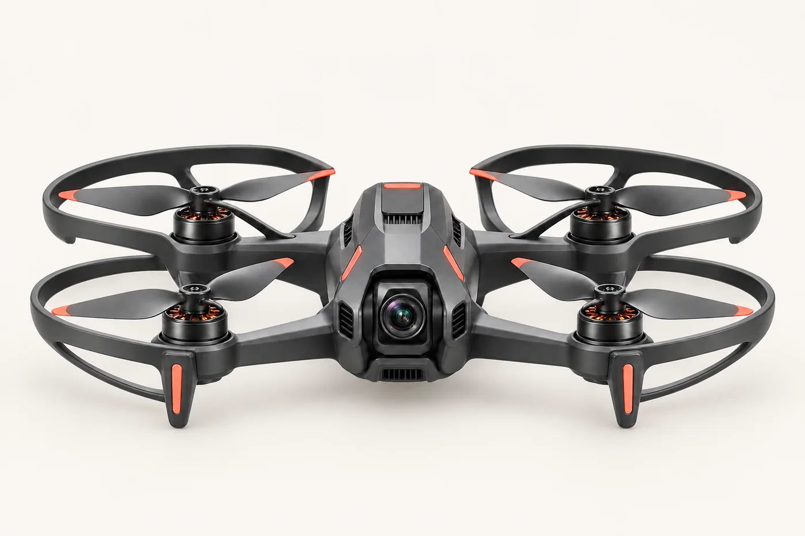

Подготовка техники
Разберём устройство БПЛА, проверку перед запуском, питание, связь и базовое обслуживание.
ГРАЖДАНСКОЕ НАПРАВЛЕНИЕПРАКТИЧЕСКАЯ ПОДГОТОВКА
Освойте управление дроном с нуля: от безопасной подготовки техники и тренировок в симуляторе до практических полётов.
БАЗА ДЛЯ УВЕРЕННОГО СТАРТА
Разберём устройство БПЛА, проверку перед запуском, питание, связь и базовое обслуживание.
Отработаем ориентацию, взлёт, посадку, устойчивый полёт и действия в типовых ситуациях.
Научимся оценивать площадку, погоду, техническое состояние и риски до начала полёта.
Поработаем с маршрутом, камерой, телеметрией и результатами практического задания.

ПРЕДПОЛЁТНАЯ
ПРОВЕРКА
УПРАВЛЕНИЕ
И СВЯЗЬ
БЕЗОПАСНЫЕ
СЦЕНАРИИ
ОБСЛУЖИВАНИЕ
ТЕХНИКИ
На занятиях важно не только поднять аппарат в воздух, но и понимать, почему он ведёт себя именно так.
ШЕСТЬ ПОСЛЕДОВАТЕЛЬНЫХ МОДУЛЕЙ
Зоны полётов, оценка рисков, ответственность оператора и порядок подготовки площадки.
Основные узлы, питание, пульт, каналы связи, камера и чек-лист перед запуском.
Органы управления, координация, ориентация в пространстве и устойчивые манёвры.
Взлёт, посадка, удержание позиции, движение по маршруту и безопасное завершение полёта.
Работа с изображением, показаниями системы, картой и контролем параметров полёта.
Самостоятельная подготовка техники, выполнение маршрута и разбор результата.
ГРАЖДАНСКИЕ ЗАДАЧИ
Базовые навыки пилотирования нужны там, где важно увидеть объект сверху, пройти маршрут или собрать визуальные данные.
Осмотр площадок и фиксация этапов работ.
Визуальный мониторинг объектов и территорий.
Наблюдение за полями и состоянием участков.
Съёмка местности и подготовка исходных данных.
Плавные пролёты и выразительные ракурсы.
УЧИМСЯ ПОЭТАПНО
Короткие смысловые блоки перед каждым практическим этапом.
ПОНИМАТЬБезопасная отработка координации и базовых движений.
ТРЕНИРОВАТЬСЯПодготовка аппарата и полётные задания с разбором ошибок.
УПРАВЛЯТЬТочная длительность, расписание, место занятий, состав оборудования и итоговый документ зависят от выбранной программы и группы.
Уточнить условия ↘БЕЗ ДЛИННОЙ АНКЕТЫ
Откройте MAX или Telegram и коротко расскажите, чему хотите научиться.
Уточним опыт, удобный формат и вопросы по программе.
Сообщим актуальную программу, расписание и состав практики.
Пройдите путь от симулятора до самостоятельного полётного задания.
КОРОТКО О ГЛАВНОМ
Если ответа нет в списке, напишите в мессенджер — уточним без телефонных звонков и формы заявки.
Да. Программа начинается с устройства БПЛА, безопасности и базовых движений в симуляторе.
Это зависит от конкретной группы и формата практики. Состав оборудования подтвердим до начала обучения.
Длительность и расписание зависят от выбранной программы. Напишите нам, чтобы получить актуальные условия набора.
Точное наименование документа фиксируется в условиях выбранной программы. Мы сообщим его до оформления обучения.
Нет. Обучение формирует практические навыки, но не является гарантией трудоустройства или определённого дохода.
Нет. Для гражданских полётов действуют требования к учёту БПЛА и использованию воздушного пространства. Этому посвящён отдельный блок программы; актуальные справочные материалы публикует Росавиация.
ГОТОВЫ НАЧАТЬ?
На странице нет формы и номера телефона. Так проще сразу перейти к диалогу и получить актуальные условия курса.